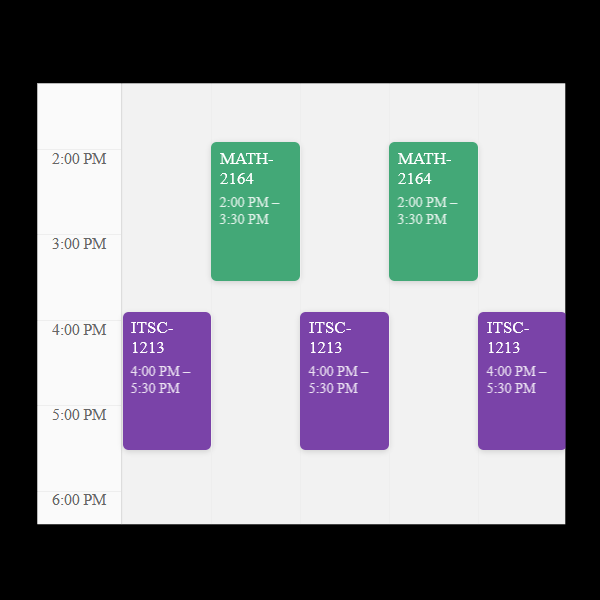

Computer Science Major at UNC Charlotte
I'm Evan Youssef, a graduate student majoring in Computer Science at UNC Charlotte, concentrating on AI, Robotics,
and Gaming.
I recently graduated from UNC Charlotte with a Bachelor's Degree in Computer Science and plan to earn my Master's
degree by December of 2025.
Find me here:
LinkedIn |
GitHub |
Steam |
Itch.io |
evanyoussef8@gmail.com
A course and schedule manager for UNC Charlotte students and faculty.
My contributions include the Visual Course Schedule, as well as portions of the Course Information and Registered Course Plan functionalities and styling. This project was developed for a Software Systems & Design Course.
A 2D-platformer game made in Godot, published on Steam.
I developed this as a hobby project to sharpen my game development skills. The game includes 15 levels, 3 boss fights, unique enemies, and a built-in level editor.
A local illumination model written in JavaScript and GLSL.
I developed this project for a Computer Graphics course, focusing on the graphics pipline, including implementation.
A top-down roguelike rated #1 overall in the Spring 2024 UNCC Game Jam.
I made this game to practice prodcedual generation, using a walker algoirthm to generate rooms and hallways.
A top-down action-adventure developed in 48 hours for the Spring 2023 UNCC Game Jam.
My contributions include gameplay systems such as movements, combat, and level-looping.
A pixel-platformer set in an underground cave network, gaining over 120,000 downloads on Steam with 95% positive ratings.
Being my first Steam release, developing Cave Crawler solidified my interest in game development and was an invaluable learning experience.